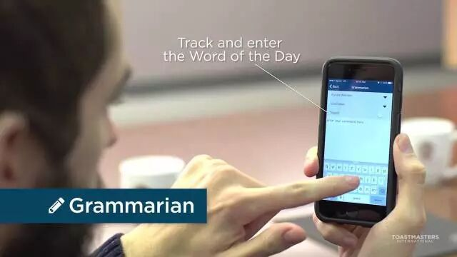
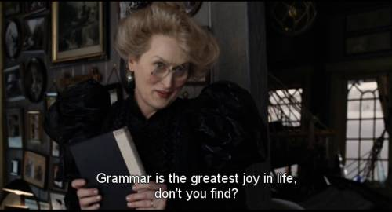

关键词：Grammarian是干嘛的


Grammarian是把3分钟体现到极致的三大角色之一。成为Grammarian，你将掌握聆听的技巧和描述细节的能力。你的基本任务是对整场会议发言者的语法，用词和发音进行点评。如果你已经可以完成基本任务了，那你已经很棒了！接下来，你可以挑战更高的任务，如：对于整场会议发言者的整体逻辑和语言风格进行点评；使用幽默的语言进行角色介绍和语法官报告；说出自己的主观感受，使语法官报告更个性化。
关键词：Grammarian会议前准备

（1）角色说明。准备一个简短的角色说明。介绍总点评官在会议中的职能。如果是第一次做时间官，可以与Mentor核对确认角色说明，并可做事先排练。
（2）选词。选择一个实词，主要是名词，动词，形容词，惯用语，成语或谚语等，作为每周一词，并准备例句，介绍其用法。需要注意的是：
如果这个词太生僻，不常用，那么即便你教了，大家也基本不会使用；如果这个词太常见，那根原起不到这个环节教大家学新词的目的，如：每周一词就是AND ，估计用的人绝对爆棚。
其次，中文会议中，由于基本不存在新词的概念，所以中文会议的每周一词主要是为了增加中文的优美性和简洁性。例如一些大家平时用的不多的成语，习语，甚至诗词。例如：来而不往非礼也，叶（ she4 ）公好龙，顾左右王而言它大家可能有所耳闻，但不知出处典故，也容易用错，读错。介绍这个词的目的是为了让大家学会正确使用这个成语或者说法。
总而言之，今天你就是我们的小老师，会前要好好备课哦！
关键词：Grammarian会议中的介绍流程
第1步：会议开始主席上台伊始，就认真聆听每个演讲人的用词，发音和语法，记录语言问题，同时记下优美的词句以及修辞手法。
第2步：在被GE邀请上台介绍时，引出简短的角色说明，并介绍每周一词，举例介绍其用法。
介绍“word of day”推荐方法：
(1)“我演你猜”：只能用肢体语言解释词汇的意思。
(2)带领大家齐读3遍。
(3)带领大家一一用词汇造句。鼓励大家多多使用此词。
(4).......（期待你的创意）
第3步：依国际惯例，发言者在使用“word of day”时，Grammarian要带领大家轻拍桌子，炒热现场气氛，以示鼓励。
第4步：在被GE邀请上台给出点评报告时，分门别类地指出语言错误，介绍正确的用法。如果发言者的用语比较好的地方，例如quotes或成语。在Report中有侧重地提及。如果发言者使用了多次“word of day”，在Report时也要大力表扬。
需要注意的是纠正语言错误时，考虑到被点评对象的心理接受程度，可以不用提及其姓名。

看了我们的介绍有没有对Grammarian的职责和工作流程清晰起来呢？欢迎大家来北航头马俱乐部体验一下语法官哦！同时，欢迎加入我们北航Toastmaster俱乐部成为我们的会员哦！成为我们的会员要满足3+2+1的要求，即：参加3次例会；完成2次即兴演讲；申请并做1次入会演讲（1-2分钟自我介绍+2分钟问答）。会员投票通过后，即可办理入会手续，具体可以咨询我们的VPM。
我们的时间是每周五晚19:30-21:30（联合会议除外），地点是北航新主楼某教室，我们和你不见不散哦～

https://mp.weixin.qq.com/s/oN7r5uVNusUv5hewXWt-Wg
本页为抢救式本地归档，图文已永久保存。